Previsão de alagamentos com sensores IoT e inteligência artificial,
com aviso ao cidadão até 2 horas antes.
| Grupo | <nome do grupo> |
|---|---|
| Integrantes (nome — RM) | <Nome 1 — RM00000> <Nome 2 — RM00000> <Nome 3 — RM00000> <Nome 4 — RM00000> <Nome 5 — RM00000> |
| Vídeo pitch | <link público> |
| Repositório | <link do GitHub> |
Todos os dados de sensores, ocorrências e relatos são sintéticos, gerados por bigdata/gerar_dados.py com semente fixa. Os nomes de bairros servem só de cenário.
| Quem é o cidadão beneficiado | Moradores dos 96 distritos de São Paulo, em especial os de várzea e periferia (ex.: Jardim Helena, onde fica o Jardim Pantanal, Itaim Paulista e Vila Leopoldina), que sofrem com enchentes todo verão. Muitos são idosos e famílias de baixa renda, nem sempre com smartphone ou internet estável. Também a Defesa Civil e o gestor da subprefeitura, que precisam decidir rápido e investir certo. |
|---|---|
| Qual problema será resolvido | Hoje o aviso de alagamento costuma chegar tarde: o alarme manual (régua) só dispara quando o córrego já está perto de transbordar, e os relatos da população chegam soltos por telefone ou redes sociais, sem triagem. Resultado: carros, móveis e documentos perdidos e risco à vida. |
| Como a solução funciona | Estações IoT baratas medem chuva, nível do córrego e temperatura a cada hora. Uma IA estima a chance de transbordar nas próximas 3 horas. Um agente de alerta transforma o risco em ação: SMS ao morador (funciona em qualquer celular) e ação recomendada à Defesa Civil. O cidadão também pode relatar problemas em texto livre, que a IA classifica e encaminha em milissegundos. Um dashboard mostra ao gestor onde investir em prevenção. |
| Quais tecnologias serão usadas | Python, FastAPI, SQLite, pandas, scikit-learn (RandomForest, TF-IDF + Regressão Logística), HTML/CSS/JavaScript + Chart.js, ESP32 no Wokwi (HC-SR04, pluviômetro, DHT22), Docker, GitHub Actions, pytest, ruff, JWT. Medidas analíticas também documentadas em DAX para Power BI. |
| Quem participa do ecossistema | Moradores (recebem alertas e relatam), agentes comunitários, Defesa Civil (fila priorizada e alertas), subprefeituras (bueiros, árvores), operadoras de SMS, escolas e UBS como pontos de apoio, e universidades/ONGs que podem instalar e manter estações. |
| Como o impacto será medido e ampliado | Métricas embutidas: % de alagamentos avisados com 1 h ou mais de antecedência, antecedência média, falsos alarmes por mês, tempo de triagem, famílias afetadas e índice de vulnerabilidade por bairro. Para ampliar: cada nova estação custa menos de R$ 300 em componentes, a API roda em um único container e o modelo é re-treinado com os dados de cada novo bairro. O MVP já cobre a cidade inteira: 96 estações, uma por distrito. |
| ODS | Como o Pluvia contribui |
|---|---|
| 11 Cidades e comunidades sustentáveis | Meta 11.5: reduzir mortes e perdas por desastres, com foco nos mais vulneráveis. A antecedência do aviso passa de 36 para 75 minutos em média. |
| 13 Ação contra a mudança do clima | Meta 13.1: resiliência a riscos climáticos. O sistema de alerta precoce é medida de adaptação a chuvas extremas cada vez mais frequentes. |
| 9 Indústria, inovação e infraestrutura | Infraestrutura de baixo custo (IoT + nuvem) e dados abertos que orientam investimento em drenagem. |
| 10 Redução das desigualdades | O alerta chega por SMS, sem exigir smartphone, internet ou cadastro com dados pessoais. Interface com fonte ampliada e alto contraste. |
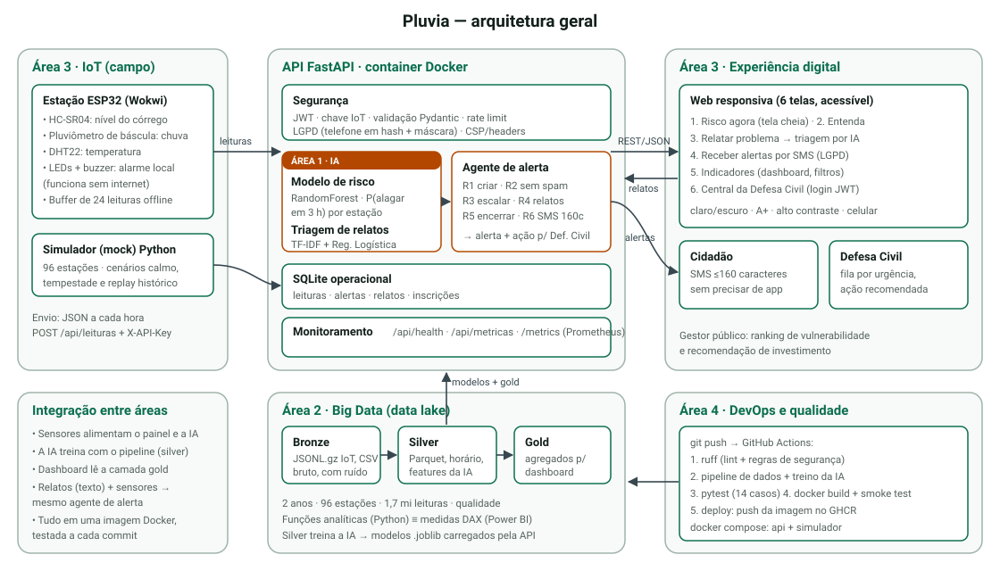
docs/arquitetura.svg).POST /api/leituras com a chave do dispositivo.Organização do código por áreas (pastas): ia/, bigdata/, iot/, app/ + frontend/, tests/, .github/workflows/, docs/.
| Componente | Técnica | Parte do problema que resolve |
|---|---|---|
Modelo de risco (ia/treinar.py, ia/risco.py) | RandomForest (300 árvores, prof. 8) sobre 6 features físicas: chuva da hora, chuva 3 h, chuva 24 h, nível, variação do nível em 1 h, % da cota. Alvo: transbordar nas próximas 3 h. | Antecipa o alagamento enquanto ainda dá tempo de agir. A água da bacia leva de 1 a 3 h para chegar ao córrego (tempo de concentração), e o modelo aprende a ler esse padrão. |
Triagem de relatos (ia/triagem.py) | NLP: TF-IDF (palavras 1-2 + caracteres 3-5, robusto a erro de digitação e falta de acento) + Regressão Logística para categoria e severidade. | Relatos em linguagem do dia a dia viram categoria, urgência, órgão responsável e prazo, sem fila manual. |
O agente (ia/automacao.py) decide a ação a cada nova leitura ou relato grave:
| Regra | Condição | Ação |
|---|---|---|
| R1 | Risco "alerta" (p ≥ 0,35, limiar escolhido por validação cruzada) ou "emergência" (p ≥ 0,75) | Cria alerta para o bairro, envia SMS aos inscritos e recomenda ação à Defesa Civil |
| R2 | Já existe alerta ativo de nível igual ou maior | Mantém, sem reenviar (evita spam e "fadiga de alerta") |
| R3 | Nível de risco sobe | Novo alerta escalonado (ex.: Alerta → Emergência) |
| R4 | 2 ou mais relatos de alagamento com severidade alta no bairro na última hora | Eleva para pelo menos "alerta" (sinal humano complementa o sensor) |
| R5 | Risco volta a "normal" | Encerra os alertas ativos do bairro |
| R6 | Toda mensagem | Linguagem simples, ação concreta, telefone 199, até 160 caracteres (cabe em 1 SMS) |
Regras de urgência sobre a IA de triagem. Expressões de risco à vida forçam severidade "alta" mesmo se o modelo errar (segurança primeiro): ilhad, arrastad, correnteza, cintura, peito, invad* casa, desab, rachadura, faísca, fio solto, risco de vida, pessoa presa, água entrando, afogad. Relatos com confiança abaixo de 60% vão para revisão humana.
ia/automacao.py, por exemplo: "ALERTA {bairro}: risco de alagamento nas próximas 3h. Tire carros de áreas baixas e prepare documentos. Defesa Civil 199".Previsão de risco: execução do simulador contra a API (docs/evidencias/simulador_tempestade.txt), estação AC-01 do Jardim Helena, cota de 180 cm (o simulador também envia as outras 32 estações da Zona Leste):
hora 3 chuva= 4.0mm nivel= 62.6cm p=0.02 [Normal] agente=nenhuma hora 4 chuva= 12.0mm nivel= 77.4cm p=0.03 [Normal] agente=nenhuma hora 5 chuva= 18.0mm nivel= 116.1cm p=0.53 [Alerta] agente=criar <<< ALERTA (2 h antes) hora 6 chuva= 16.0mm nivel= 176.7cm p=0.95 [Emergência] agente=criar (R3 escalonamento) hora 7 chuva= 8.0mm nivel= 234.9cm p=1.00 [Emergência] agente=manter (R2) ← transbordou hora 12 chuva= 0.0mm nivel= 165.3cm p=0.00 [Normal] agente=encerrar (R5)
Na hora 5 o córrego está em 64% da cota: a régua de 80% ainda não dispararia, mas a IA já emite o alerta. O transbordamento ocorre na hora 7.
Resposta da API a uma leitura (entrada {"estacao":"AC-01","chuva_mm":18,"nivel_cm":116}, rodando no container):
{"bairro":"Jardim Helena",
"features":{"chuva_mm":18.0,"chuva_3h":18.0,"chuva_24h":18.0,"nivel_cm":116.0,"delta_nivel_1h":55.0,"nivel_pct_cota":0.644},
"risco":{"probabilidade":0.519,"nivel":"alerta","rotulo":"Alerta"},
"agente":{"acao":"criar","nivel":"alerta",
"mensagem":"ALERTA Jardim Helena: risco de alagamento nas próximas 3h. Tire carros de áreas baixas e prepare documentos. Defesa Civil 199",
"acao_defesa_civil":"Deslocar equipe ao bairro; acionar agentes comunitários; bloquear vias baixas.","motivo":"modelo: p=0.52; R1"}}
Triagem de relatos (frases fora da base de treino):
| Entrada (texto livre) | Categoria | Severidade | Encaminhamento | Confiança |
|---|---|---|---|---|
| "Minha mãe idosa ficou ilhada, a água entrou em casa" | alagamento | alta | Defesa Civil · até 30 min | 95% |
| "Bueiro da esquina tampado de garrafa pet" | bueiro entupido | baixa | Subprefeitura, Limpeza · 48 h | 97% |
| "Lâmpada do poste queimada há semanas" | alagamento ✗ | baixa | revisão humana | 31% |
O terceiro caso mostra a salvaguarda: com confiança baixa, a IA não decide sozinha e manda o relato para revisão.
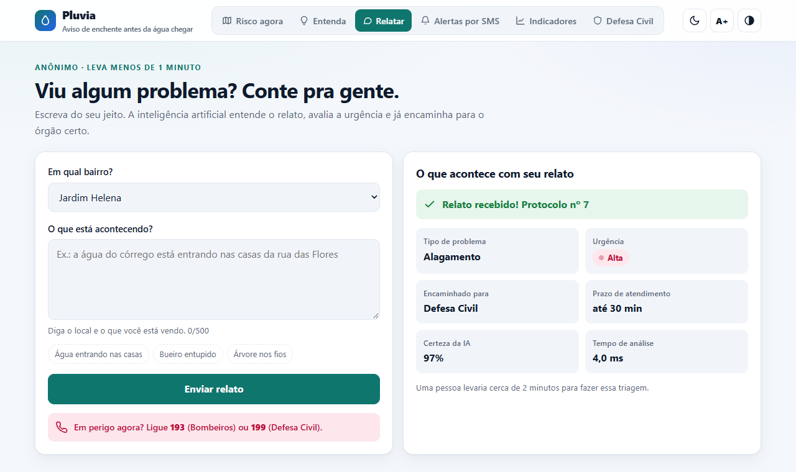
Treino com o 1º ano de dados das 96 estações e teste no 2º ano (839.682 horas-estação, 356 alagamentos que o modelo nunca viu). A IA só é acionada nas horas "candidatas" (choveu nas últimas 24 h ou o córrego passou de 50% do limite); fora delas o risco é zero por definição, o que deixa treino e API rápidos (229.470 horas candidatas no treino). O limiar de alerta (0,35) foi escolhido por validação cruzada dentro do treino (folds por mês, máximo F1), sem olhar o teste. "Antes" é a régua manual usada hoje: alarme quando o córrego atinge 80% da cota.
| Métrica (período de teste) | Antes: régua 80% | Depois: IA | Ganho |
|---|---|---|---|
| Alagamentos avisados com 1 h ou mais de antecedência | 64,0% | 96,3% | +32 p.p. |
| Antecedência média do aviso | 38,9 min | 92,5 min | 2,4× mais tempo |
| Falsos alarmes por mês (96 distritos) | 28,4 | 13,0 | −54% |
| Precisão por hora de alarme | 15,7% | 75,6% | 4,8× |
| Recall por hora (horas antes do transbordamento) | 21,6% | 53,5% | 2,5× |
Importância das features: variação do nível em 1 h (29%), chuva da hora (22%), % da cota (20%), chuva acumulada em 3 h (15%), nível absoluto (8%), chuva 24 h (5%). Hora do dia e mês foram testados e descartados: o modelo "decorava" o horário dos temporais de verão em vez de aprender a física.
| Triagem de relatos | Resultado |
|---|---|
| Teste com dados sintéticos (1.000 relatos) | 100% categoria, 100% severidade (base gerada por modelos de frase, por isso fácil demais) |
Validação honesta: 20 frases escritas à mão, fora dos modelos (ia/casos_validacao_manual.csv) | 95% categoria · 85% severidade |
| Tempo por relato | ~4 ms (vs. ~2 min de triagem manual por atendente) |
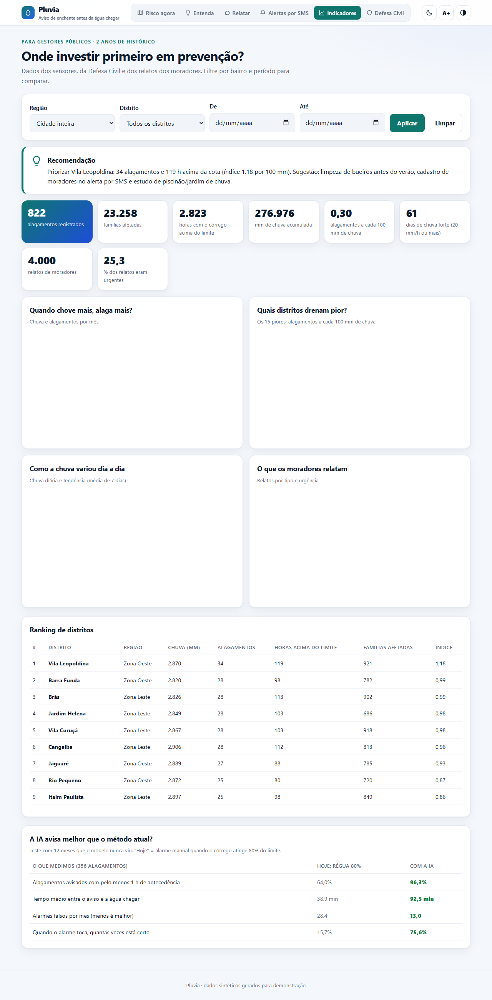
/api/ia/metricas.| Camada | Arquivos | Conteúdo |
|---|---|---|
| Bronze | leituras_iot.jsonl.gz (1.690.312 linhas de 96 estações, comprimido), ocorrencias_defesa_civil.csv (822), relatos_cidadaos.csv (4.000) | Dados brutos como chegam: JSON aninhado do dispositivo, timestamps com atraso, IDs em minúsculas, pacotes perdidos, leituras com defeito (999 cm, −5 mm) e reenvios duplicados. |
| Silver | leituras.parquet (1.681.918, formato colunar), ocorrencias.csv, relatos.csv | Série horária limpa por estação, com flag de imputação e features da IA (chuva 3 h/24 h, Δnível, % da cota, alvo "alaga em 3 h"). Texto dos relatos normalizado. |
| Gold | diario_bairro.csv, mensal_bairro.csv, relatos_categoria.csv, dim_bairro.csv, qualidade.json | Modelo analítico (fatos diário/mensal por bairro + dimensão bairro), pronto para o dashboard ou para o Power BI. |
Modelo operacional (SQLite da API): leituras(estacao, bairro, ts, chuva_mm, nivel_cm, temp_c, probabilidade, nivel_risco) · alertas(bairro, nivel, mensagem, acao_defesa_civil, motivo, ativo, destinatarios) · relatos(bairro, texto, categoria, severidade, confianca, orgao, prazo, status) · inscricoes(bairro, contato_hash, contato_mascarado).
bigdata/gerar_dados.py simula 2 anos e 96 estações de forma vetorizada em ~10 s, com chuva correlacionada por região e hidrograma realista de 1 a 3 h de atraso).imputado.Relatório de qualidade gerado automaticamente (gold/qualidade.json):
| Linhas bronze | Duplicatas removidas | Nível fora da faixa | Chuva fora da faixa | Nulos (nível) | Horas imputadas | Linhas silver |
|---|---|---|---|---|---|---|
| 1.690.312 | 8.392 | 4.996 | 4.990 | 21.752 | 64.718 | 1.681.918 |
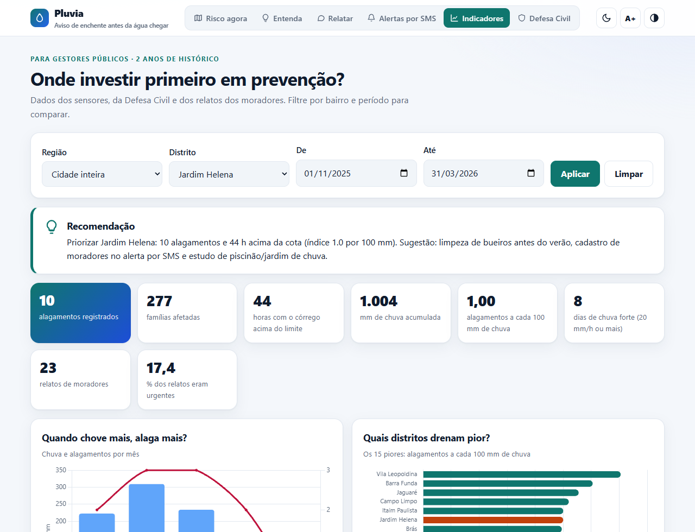
Decisão apoiada: onde investir primeiro em prevenção. O índice de vulnerabilidade (alagamentos por 100 mm de chuva) separa "choveu muito" de "drena mal". Com praticamente a mesma chuva em 2 anos (~2.870 mm), Vila Leopoldina tem índice 1,18 e Vila Mariana 0,00, então a primeira é prioridade para limpeza de bueiros, piscinão e cadastro de moradores no SMS.
Implementadas em bigdata/analitico.py e documentadas em DAX em bigdata/medidas_dax.md, para montar o mesmo painel no Power BI a partir dos CSVs gold.
| Medida | DAX |
|---|---|
| Chuva acumulada | SUM(diario_bairro[chuva_total_mm]) |
| Alagamentos | SUM(diario_bairro[alagamentos]) |
| Horas críticas | SUM(diario_bairro[horas_acima_cota]) |
| Índice de vulnerabilidade | DIVIDE([Alagamentos], [Chuva Acumulada]) * 100 |
| Dias com chuva forte | CALCULATE(DISTINCTCOUNT(diario_bairro[data]), diario_bairro[chuva_max_1h_mm] >= 20) |
| % relatos graves | DIVIDE(CALCULATE(SUM(relatos_categoria[qtd]), relatos_categoria[severidade]="alta"), SUM(relatos_categoria[qtd])) |
| Média móvel 7 dias | AVERAGEX(DATESINPERIOD(Calendario[Date], MAX(Calendario[Date]), -7, DAY), CALCULATE(AVERAGE(diario_bairro[chuva_total_mm]))) |
| População em bairros afetados | SUMX(FILTER(dim_bairro, CALCULATE([Alagamentos]) > 0), dim_bairro[populacao]) |
| Ranking de vulnerabilidade | RANKX(ALL(dim_bairro[bairro]), [Indice Vulnerabilidade], , DESC) |
| Variação anual | DIVIDE([Alagamentos] - CALCULATE([Alagamentos], SAMEPERIODLASTYEAR(Calendario[Date])), CALCULATE([Alagamentos], SAMEPERIODLASTYEAR(Calendario[Date]))) |
| Tela | Para quem | O que faz |
|---|---|---|
Risco agora (index.html) | Cidadão | Tela cheia e resumida: o cidadão escolhe o bairro e vê um "copo" animado com o nível do córrego, a mensagem principal (ex.: "Pode alagar em até 3 horas"), 3 ações do que fazer e os outros bairros. A cor de fundo muda com o risco e cai chuva animada quando está chovendo. O gráfico de 24 h fica logo abaixo. |
Entenda (entenda.html) | Cidadão | Explica sem jargão: como funciona (sensor → IA → SMS), o que significa cada cor, glossário de cada número da tela, simulador interativo ("faça chover e veja o córrego encher") e perguntas frequentes sobre confiança e privacidade |
Relatar problema (relatar.html) | Cidadão | Relato anônimo em texto livre, com triagem por IA na hora |
Receber alertas (alertas.html) | Cidadão | Cadastro de celular para SMS com consentimento LGPD; histórico de alertas |
Dados e indicadores (dashboard.html) | Gestor | Dashboard com filtros, recomendação e comparação da IA |
Central da Defesa Civil (admin.html) | Defesa Civil | Login JWT, fila de relatos por urgência, status, decisões do agente, saúde do sistema |
Design e acessibilidade: tema claro e escuro (segue o celular ou escolha manual), paleta com contraste adequado nos dois modos, botões A+ (fonte maior) e alto contraste, animações que são desligadas para quem prefere menos movimento, rótulos em todos os campos, aria-live nas atualizações e níveis de risco indicados por texto + cor (não só cor).
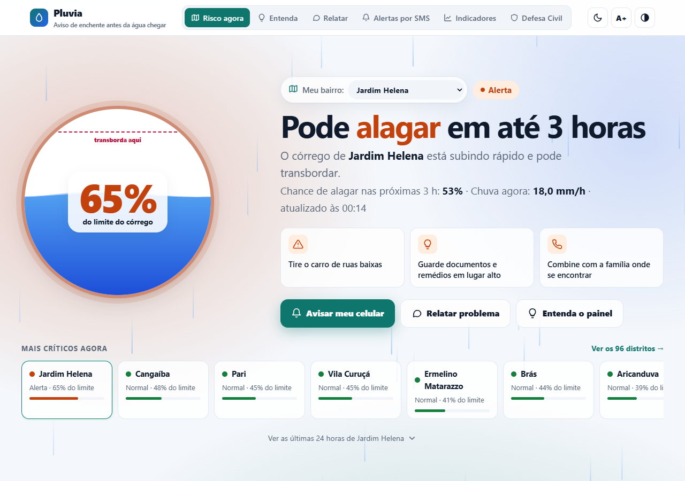
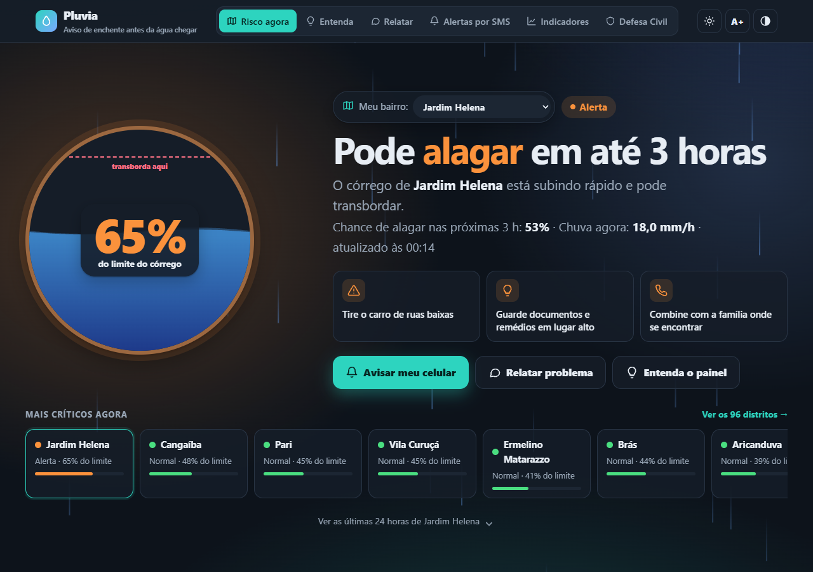
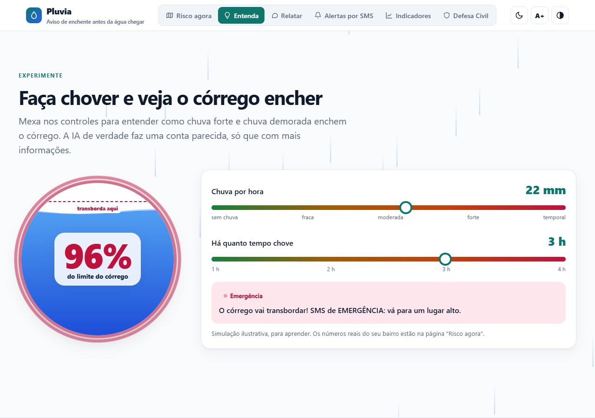
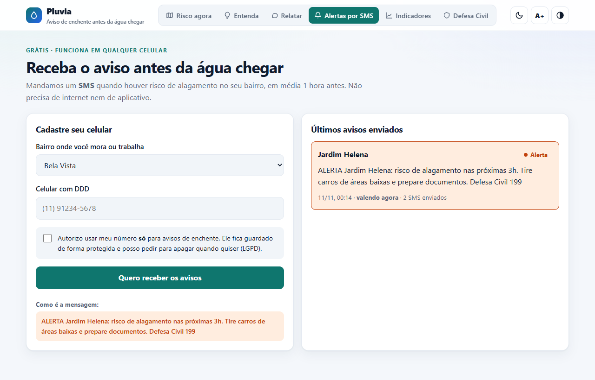
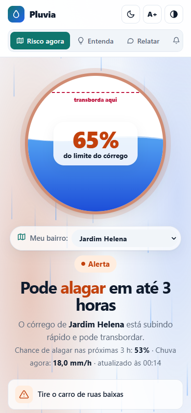
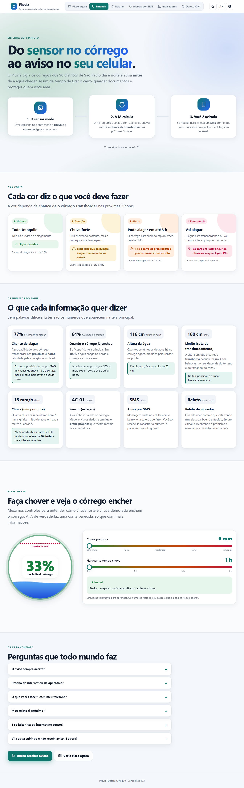
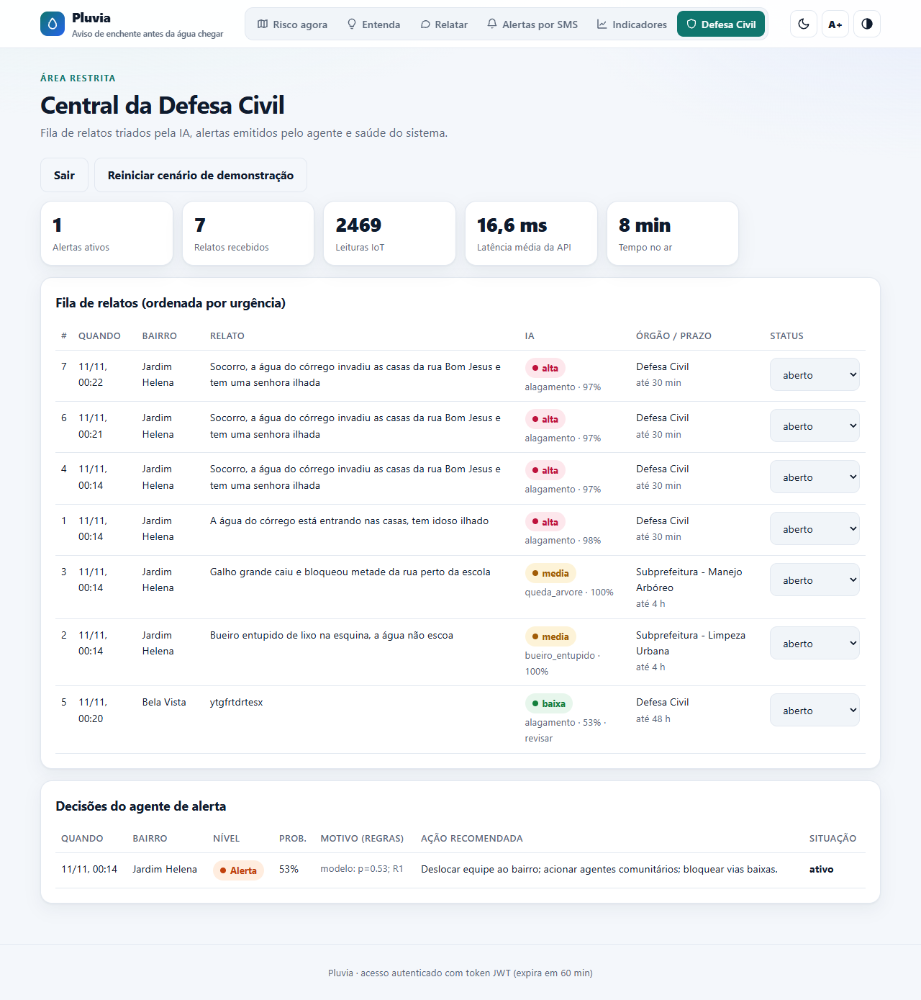
| Sensor / atuador | Mede / faz | Implementação |
|---|---|---|
| HC-SR04 ultrassônico | Nível do córrego (altura do sensor − distância até a água), mediana de 5 leituras | iot/estacao_pluvia/: sketch ESP32 + diagram.json do Wokwi; envia JSON por Wi-Fi com X-API-Key. iot/simulador.py: mock das 96 estações (envia a região do temporal) com o mesmo protocolo e cenários calmo, tempestade e replay do maior evento histórico. |
| Pluviômetro de báscula | Chuva (0,2 mm por báscula, contada por interrupção com debounce) | |
| DHT22 | Temperatura e umidade do ar | |
| LEDs + buzzer | Alarme local (verde/amarelo/vermelho) que funciona sem internet, mais buffer de 24 leituras offline |
Para testar no Wokwi: crie um projeto ESP32 em wokwi.com, cole o .ino e o diagram.json, adicione a biblioteca "DHT sensor library for ESPx", ajuste o slider de distância do HC-SR04 e clique no botão verde para simular chuva. Para o HTTP chegar à API local, use o Wokwi Private Gateway ou exponha a API.
O mesmo fluxo é verificado automaticamente pelo teste CT-06 e pode ser reproduzido com python -m iot.simulador --cenario tempestade.
Veja a Figura 1 (seção 2): estações IoT → API FastAPI (segurança, IA, agente, SQLite, monitoramento) → web do cidadão, Defesa Civil e gestor; data lake bronze, silver e gold treinando a IA e alimentando o dashboard; tudo empacotado em Docker e testado no CI.
pluvia/ ├── app/ API FastAPI (main, segurança, schemas, banco) ├── frontend/ 6 telas HTML + CSS + JS (claro/escuro) ├── ia/ treino, risco, triagem, agente de automação ├── bigdata/ gerador, pipeline bronze/silver/gold, funções analíticas, DAX ├── iot/ sketch ESP32 + diagram.json (Wokwi) e simulador ├── tests/ 14 casos automatizados (pytest) ├── scripts/ preparar.py (dados + IA), capturar_telas.mjs ├── docs/ arquitetura, plano de testes, roteiro do pitch, evidências, prints ├── Dockerfile · docker-compose.yml · .github/workflows/ci.yml · pyproject.toml
Versionado com Git (branch main). Dados e modelos não são versionados: são regerados de forma reprodutível (semente fixa) por python -m scripts.preparar.
python:3.12-slim, gera dados e treina a IA no build, roda como usuário sem privilégios, com HEALTHCHECK. docker-compose: API + simulador (perfil demo) e volume para o banco..github/workflows/ci.yml): a cada push, roda lint (ruff + regras de segurança), pipeline de dados e treino, 14 testes (relatório JUnit e métricas da IA como artefatos), build da imagem com smoke test (health, leitura IoT e /metrics) e deploy com publicação da imagem no GitHub Container Registry na branch main./api/health, /api/metricas (uptime, requisições por rota e status, latência média, alertas ativos) e /metrics no formato Prometheus, pronto para Grafana.Evidência real (docs/evidencias/docker_run.txt):
$ docker ps --filter name=pluvia-evid
NAMES IMAGE STATUS PORTS
pluvia-evid pluvia:latest Up 19 seconds (healthy) 0.0.0.0:8001->8000/tcp
$ curl 127.0.0.1:8001/api/health
{"status":"ok","versao":"1.0.0","modelos":true}
$ curl -X POST 127.0.0.1:8001/api/leituras (sem chave)
{"detail":"Chave do dispositivo inválida"}
$ curl 127.0.0.1:8001/metrics
pluvia_requests_total 6
pluvia_alertas_ativos 1
pluvia_leituras_total 2305
pluvia_http_status_total{code="201"} 1
pluvia_http_status_total{code="401"} 1
| # | Prática | Onde / como |
|---|---|---|
| 1 | Autenticação JWT | Área da Defesa Civil; token HS256 com expiração de 60 min (app/seguranca.py) |
| 2 | Senha com hash | PBKDF2-SHA256 com salt e 200 mil iterações; comparação em tempo constante; senha só por variável de ambiente |
| 3 | Autenticação de dispositivos | Cabeçalho X-API-Key obrigatório em /api/leituras |
| 4 | Validação de entrada | Pydantic: faixas físicas dos sensores, estação e bairro cadastrados, tamanho do texto, bloqueio de HTML, formato do telefone |
| 5 | Proteção de dados (LGPD) | Telefone guardado só como HMAC e máscara (11) *****-1234; consentimento explícito; relatos anônimos, sem IP ou nome |
| 6 | Rate limit | Até 5 relatos por minuto por origem (HTTP 429), contra spam e robôs |
| 7 | Cabeçalhos HTTP e erros | CSP, X-Frame-Options DENY, nosniff, no-referrer; erro 500 genérico sem stack trace; SQL sempre parametrizado; XSS evitado com textContent |
| ID | Caso | Esperado | Resultado |
|---|---|---|---|
| CT-01 | Saúde da API | 200, modelos carregados | Passou |
| CT-02 | Login com senha errada | 401 | Passou |
| CT-03 | Rota protegida sem token, com token falso e com token válido | 401 / 401 / 200 | Passou |
| CT-04 | Leitura IoT sem chave ou com chave errada | 401 | Passou |
| CT-05 | Leitura com 999 cm, chuva negativa, estação inexistente | 422 | Passou |
| CT-06 | Tempestade completa: alerta antes do transbordamento | alerta com nível < 180 cm | Passou |
| CT-07 | Triagem de relato grave | alagamento / alta / Defesa Civil | Passou |
| CT-08 | Relato com <script> e bairro inválido | 422 | Passou |
| CT-09 | 6 relatos em 1 minuto | 5×201 + 1×429 | Passou |
| CT-10 | Telefone não salvo em claro; sem consentimento | mascarado; ausente no banco; 422 | Passou |
| CT-11 | Limpeza bronze → silver | duplicata e defeito tratados | Passou |
| CT-12 | Regras R1–R6 do agente | criar / manter / escalar / encerrar | Passou |
| CT-13 | Filtros do dashboard | KPIs filtrados; 404 para bairro inválido | Passou |
| CT-14 | Cabeçalhos de segurança e /metrics | CSP presente; métricas expostas | Passou |
$ pytest tests/test_api.py::test_ct01_health PASSED [ 7%] tests/test_api.py::test_ct02_login_senha_errada PASSED [ 14%] ... tests/test_api.py::test_ct14_cabecalhos_de_seguranca_e_monitoramento PASSED [100%] ============================= 14 passed in 5.22s ============================== $ ruff check . All checks passed!
Saída completa em docs/evidencias/pytest.txt; plano detalhado em docs/plano_de_testes.md.
pip install -r requirements-dev.txt cp .env.example .env python -m scripts.preparar # dados bronze/silver/gold + treino da IA uvicorn app.main:app --env-file .env # http://localhost:8000 (API em /docs) python -m iot.simulador --cenario tempestade pytest # ou, com Docker: docker compose up --build # + simulador: docker compose --profile demo up
Projeto original do grupo. Bibliotecas de código aberto: FastAPI, Uvicorn, Pydantic, pandas, NumPy, scikit-learn, PyJWT, Chart.js, DHTesp (Wokwi). Referências: ONU (ODS 11 e 13), UN-Habitat (cidades inteligentes centradas nas pessoas), PNUD (transformação digital inclusiva).